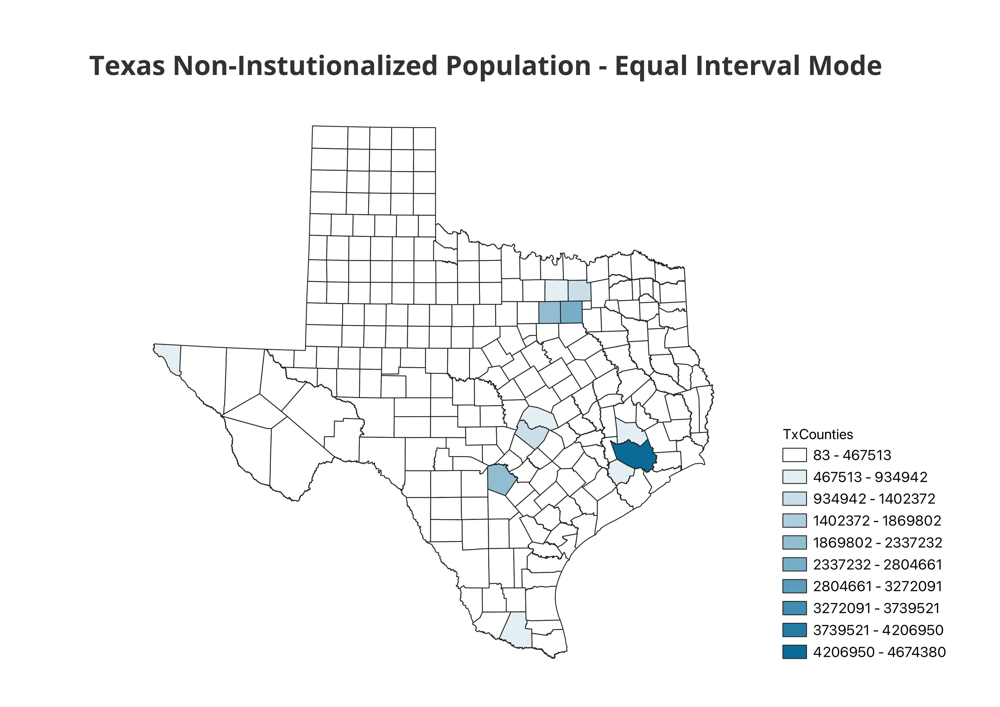

Homework 6pt2: Census data ratios and categories
By: Jerome Ibrahim
Map 1
Pros:
- Data Distribution: Equal count ensures a balanced distribution of data values across map classes, reducing skewness.
- Improved Visual Interpretation: Map readers can easily interpret and compare areas with similar data quantities.
- Enhanced Data Clarity: Equal count helps display data variations clearly for better understanding.
Cons:
- Loss of Detail: Equal count may downplay extreme values or outliers in some cases.
- Not Always Appropriate: It may not be the most suitable method for all datasets and mapping goals.
Map 2

Pros:
- Data Distribution: Equal interval classification creates clear and evenly spaced data ranges, simplifying interpretation.
- Useful for Highlighting Extremes: Effective for emphasizing extreme values or outliers in the data.
- Simple and Understandable: The method is straightforward and user-friendly.
Cons:
- Insensitivity to Data Distribution: Equal intervals may not account for data distribution, leading to uneven class sizes in some cases.
- Potential for Misleading Maps: In datasets with uneven distribution, equal intervals may create classes that do not represent the data accurately.
- Challenging for Skewed Data: Highly skewed data may result in most values clustered in one class, reducing map informativeness.
Map 3
Pros:
- Effective for Data Compression: Logarithmic scales efficiently compress a wide range of data values, making it suitable for displaying data with extreme outliers or a large dynamic range.
- Highlighting Variations: Logarithmic scales emphasize relative differences in data values, aiding the visualization of subtle variations.
- Useful for Skewed Data: Particularly valuable when dealing with skewed data distributions, as it enhances details in the lower end of the scale.
- Reduced Impact of Outliers: Logarithmic scales lessen the visual impact of extreme outliers, making maps less sensitive to a few very high or low values.
- Improved Data Representation: Provides a more accurate representation of the underlying data distribution, especially for data spanning multiple orders of magnitude.
Cons:
- Complexity: Logarithmic scales are more complex to interpret for users unfamiliar with the method, requiring additional effort.
- Risk of Misinterpretation: Users may misinterpret the data or the scale, especially when not accustomed to logarithmic representations.
- Loss of Absolute Magnitude: Emphasizing relative differences on logarithmic scales may obscure the absolute magnitude of data values.
- Inappropriate for Some Data: Not suitable for all datasets, especially when relative differences are not the primary focus or when the data lacks a wide dynamic range.
- Challenging for Map Readers: Users may find it difficult to compare regions with values displayed on a logarithmic scale, especially when differences are small.